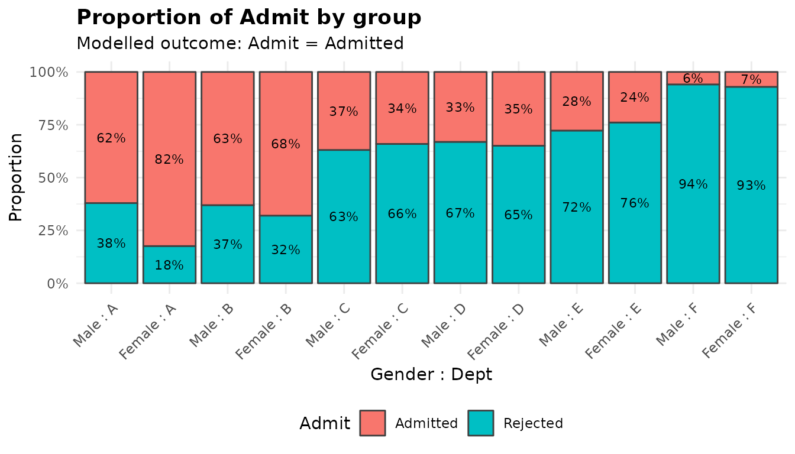
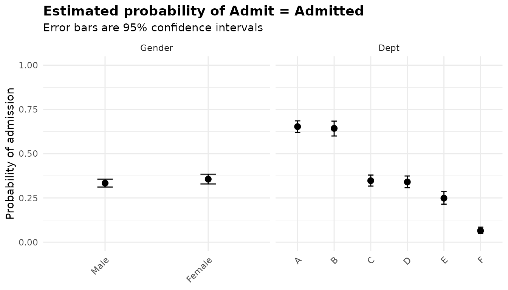
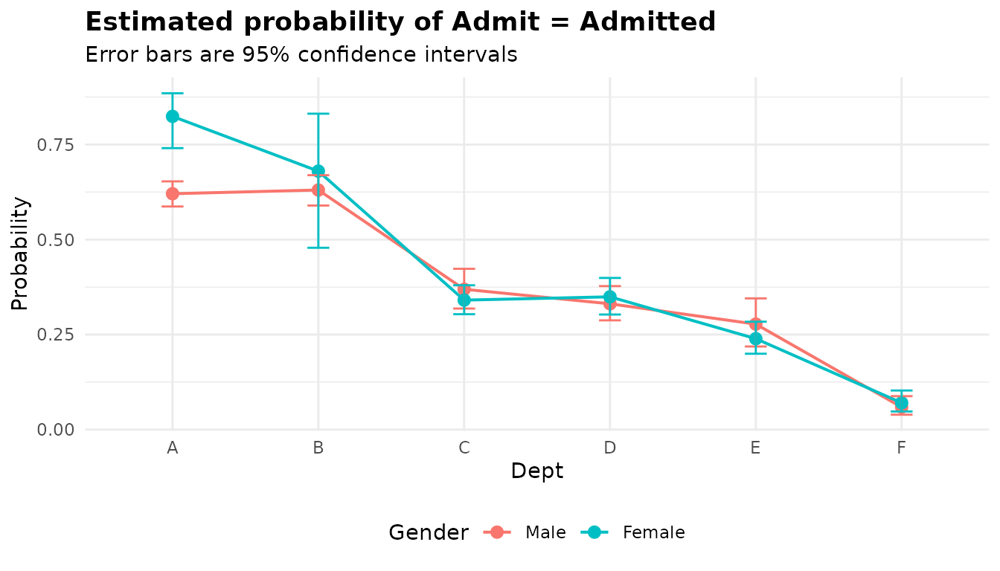

Binary outcomes: logistic regression with anova_bin()
Source:vignettes/articles/binary.Rmd
binary.Rmdanova_bin() fits a logistic regression of a two-level
outcome (admitted or not, healed or not) on one or more grouping
variables, and reports an analysis of deviance table, odds ratios,
marginal probabilities and pairwise odds ratios. Use it when each
observation is a yes/no outcome, or when you have a table of such
outcomes with a count in each row. For counts of events use
anova_count() (walkthrough); for
other response distributions use anova_glm() (walkthrough). The decision
guide covers the choice in more detail.
The data
UCBAdmissions is a three-way table of the 4,526
applications to the six largest graduate departments at Berkeley in
1973, by outcome, gender and department. as.data.frame()
turns it into one row per combination, with the number of applicants in
Freq.
ucb <- as.data.frame(UCBAdmissions)
head(ucb)
#> Admit Gender Dept Freq
#> 1 Admitted Male A 512
#> 2 Rejected Male A 313
#> 3 Admitted Female A 89
#> 4 Rejected Female A 19
#> 5 Admitted Male B 353
#> 6 Rejected Male B 207
sum(ucb$Freq)
#> [1] 4526The famous feature of these data is that the overall admission rates and the department-level rates point in different directions:
# Overall admission rate by gender
round(prop.table(xtabs(Freq ~ Gender + Admit, data = ucb), 1), 3)
#> Admit
#> Gender Admitted Rejected
#> Male 0.445 0.555
#> Female 0.304 0.696
# Admission rate by department and gender, and where each gender applied
admitted <- xtabs(Freq ~ Dept + Gender, data = ucb[ucb$Admit == "Admitted", ])
applied <- xtabs(Freq ~ Dept + Gender, data = ucb)
round(admitted / applied, 3)
#> Gender
#> Dept Male Female
#> A 0.621 0.824
#> B 0.630 0.680
#> C 0.369 0.341
#> D 0.331 0.349
#> E 0.277 0.239
#> F 0.059 0.070
applied
#> Gender
#> Dept Male Female
#> A 825 108
#> B 560 25
#> C 325 593
#> D 417 375
#> E 191 393
#> F 373 341Overall, 44.5% of men and 30.4% of women were admitted. Within departments the gap mostly disappears, and in department A it reverses. The explanation is in the last table: most women applied to departments C to F, which admitted a third or fewer of their applicants, while just over half of the men applied to A or B, which admitted most of theirs. Department is associated with both gender and admission, so a comparison of genders that ignores it is confounded. This is Simpson’s paradox, and a model with both variables is the way to separate the two.
Each row of ucb stands for Freq identical
applicants, so the counts go in as frequency weights. For later
comparison, here is the same data with one row per applicant:
Fitting the model
Which outcome is the success?
The response can be a factor with two observed levels, a logical, a
numeric 0/1 column, or a character column with two values. The function
models the probability of one level, the success, and by
default that is the second level of the factor, which is what
glm() does. For Admit the second level is
"Rejected":
levels(ucb$Admit)
#> [1] "Admitted" "Rejected"
default <- anova_bin(ucb, "Admit", "Gender", weights = "Freq", plots = FALSE)
default$notes[1]
#> [1] "Modelling P(Admit = Rejected); the other level is the baseline."That model is not wrong, but every odds ratio would be an odds ratio
of rejection. Name the level you want with
success. (A logical response models TRUE, a
0/1 response models 1, and a character response is sorted
in the C locale, so the default does not depend on your session.)
The fit
Admission modelled on gender and department, additively:
fit <- anova_bin(ucb, "Admit", c("Gender", "Dept"), weights = "Freq",
success = "Admitted")
fit
#> Analysis of deviance for a binary response (logistic regression)
#> ----------------------------------------------------------------
#> Call: anova_bin(data = ucb, response = "Admit", groups = c("Gender", "Dept"), success = "Admitted", weights = "Freq")
#> Observations used: 24
#>
#> Omnibus test (Type II, likelihood-ratio chi-square)
#> term df statistic p_value
#> 1 Gender 1 1.531 0.2159
#> 2 Dept 5 763.400 <2e-16
#>
#> Notes
#> - Modelling P(Admit = Admitted); the other level is the baseline.
#> - The grouping factors enter the model additively, so $emmeans and $posthoc are reported for each factor separately, averaged over the others (column `term`), and each factor's comparisons are a separate multiplicity family. Set interaction = TRUE to compare cells instead.
#> - $assumptions$dispersion is NA: the Pearson dispersion of a 0/1 response carries no information about overdispersion (in a model saturated in the cells it equals N / (N - k) whatever the data).
#>
#> Plots available: proportions, emmeans
#> (use plot(x, which = "proportions"))Reading the printout from the top:
- The method and the call.
-
Observations used: 24. This counts rows of$data_used, not applicants: each row carries its weight, and the weights add up to 4,526. - The omnibus table, with a heading that says what it holds: Type II tests, likelihood-ratio chi-square statistics.
- The notes: which level is modelled, how the marginal means are laid out for an additive model, and why there is no dispersion statistic. They are discussed below.
- The plots that were built (they are not drawn until you ask).
summary(fit) prints all of this plus the assumption
tables, the odds ratios, the marginal probabilities and the pairwise
comparisons. The sections below take the components one at a time.
The omnibus test
fit$anova
#> term df statistic p_value
#> 1 Gender 1 1.531231 2.159277e-01
#> 2 Dept 5 763.402731 9.546809e-163Each row is a likelihood-ratio test: statistic is the
increase in deviance when the term is dropped, referred to a chi-square
distribution on df degrees of freedom. Type II means each
factor is tested after the other, so the Gender row asks
whether gender predicts admission among applicants to the same
department. It does not (p = 0.216). Department matters a great
deal.
Compare the model with gender alone:
alone <- anova_bin(ucb, "Admit", "Gender", weights = "Freq",
success = "Admitted", plots = FALSE)
alone$anova
#> term df statistic p_value
#> 1 Gender 1 93.44941 4.167175e-22Without department the gender statistic is 93.4 on 1 degree of freedom. The difference between the two tables is the paradox in numbers.
The model as a whole
$model_stats holds statistics for the whole model:
fit$model_stats
#> $AIC
#> [1] 5201.488
#>
#> $BIC
#> [1] 5209.735
#>
#> $logLik
#> [1] -2593.744
#>
#> $mcfadden_r2
#> [1] 0.1417611
#>
#> $success_level
#> [1] "Admitted"
#>
#> $lr_vs_null
#> statistic df p_value
#> 1 856.8521 6 7.973914e-182lr_vs_null is the likelihood-ratio test of this model
against one with no predictors (the null deviance minus the deviance, on
6 degrees of freedom). mcfadden_r2 is McFadden’s pseudo R
squared, 1 - deviance / null deviance: the model removes
14.2% of the deviance. It is not a proportion of variance and runs lower
than the R squared of a linear model, so judge it against other logistic
models rather than against that. success_level repeats
which level was modelled, so a saved result says what its odds ratios
are odds of. AIC, BIC and logLik
use the prior weights, and are there to compare models fitted to the
same data.
Effect sizes
$effect_sizes holds odds ratios, one per coefficient,
each a level against its factor’s reference level:
es_cols <- c("factor", "comparison", "odds_ratio", "conf_low", "conf_high",
"p_value", "ci_method")
print(fit$effect_sizes[, es_cols], digits = 3)
#> factor comparison odds_ratio conf_low conf_high p_value ci_method
#> 1 Gender Female vs Male 1.1050 0.943 1.2954 2.17e-01 profile
#> 2 Dept B vs A 0.9575 0.772 1.1881 6.93e-01 profile
#> 3 Dept C vs A 0.2829 0.229 0.3483 2.41e-32 profile
#> 4 Dept D vs A 0.2740 0.222 0.3368 2.05e-34 profile
#> 5 Dept E vs A 0.1756 0.137 0.2244 2.86e-43 profile
#> 6 Dept F vs A 0.0366 0.026 0.0506 2.80e-84 profilefactor names the grouping variable and
comparison says what the ratio compares. The first row is
the odds of admission for women divided by the odds for men, in the same
department: 1.105, with an interval that comfortably includes 1. The
department rows compare each department with A; in department F the odds
of admission are 0.037 times those in A, whatever the applicant’s
gender. (term, se_log_or and
statistic, left out above, hold the coefficient’s name, its
standard error on the log-odds scale and its Wald z statistic.)
Put the adjusted odds ratio beside the one from the gender-only model:
rbind(alone = alone$effect_sizes[, es_cols],
adjusted = fit$effect_sizes[1, es_cols])
#> factor comparison odds_ratio conf_low conf_high p_value
#> alone Gender Female vs Male 0.5431594 0.4790421 0.6154014 1.259738e-21
#> adjusted Gender Female vs Male 1.1050274 0.9434907 1.2954013 2.167168e-01
#> ci_method
#> alone profile
#> adjusted profileIgnoring department, women’s odds of admission were about half of men’s; comparing applicants to the same department, they were slightly higher.
The odds ratios always come from a reference-coded fit of the same
model, so each one is a level against the reference level whatever
type, the global contrasts option or the class
of the factor. $anova still comes from the Type II or Type
III fit, which describes the same fitted probabilities.
Profile or Wald intervals
ci_method = "profile" (the default) gives
profile-likelihood intervals, which follow the shape of the likelihood
rather than assuming it is quadratic. With thousands of observations the
two kinds agree closely:
wald <- anova_bin(ucb, "Admit", c("Gender", "Dept"), weights = "Freq",
success = "Admitted", ci_method = "wald", plots = FALSE)
data.frame(comparison = fit$effect_sizes$comparison,
profile_low = fit$effect_sizes$conf_low,
profile_high = fit$effect_sizes$conf_high,
wald_low = wald$effect_sizes$conf_low,
wald_high = wald$effect_sizes$conf_high)
#> comparison profile_low profile_high wald_low wald_high
#> 1 Female vs Male 0.94349074 1.29540128 0.94309706 1.29476116
#> 2 B vs A 0.77234827 1.18813231 0.77207142 1.18753812
#> 3 C vs A 0.22930959 0.34833301 0.22955913 0.34867975
#> 4 D vs A 0.22242464 0.33680469 0.22268066 0.33716044
#> 5 E vs A 0.13685898 0.22441389 0.13717694 0.22489361
#> 6 F vs A 0.02596498 0.05061965 0.02626184 0.05113317They part company in small samples and, above all, under separation, where only the profile interval means anything (see Separation).
Choosing the reference level
reference takes a named list, one level per factor:
flipped <- anova_bin(ucb, "Admit", c("Gender", "Dept"), weights = "Freq",
success = "Admitted",
reference = list(Gender = "Female", Dept = "F"),
plots = FALSE)
print(flipped$effect_sizes[, es_cols], digits = 3)
#> factor comparison odds_ratio conf_low conf_high p_value ci_method
#> 1 Gender Male vs Female 0.905 0.772 1.06 2.17e-01 profile
#> 2 Dept A vs F 27.289 19.755 38.51 2.80e-84 profile
#> 3 Dept B vs F 26.130 18.578 37.49 2.01e-74 profile
#> 4 Dept C vs F 7.721 5.611 10.85 4.20e-34 profile
#> 5 Dept D vs F 7.477 5.411 10.55 2.43e-32 profile
#> 6 Dept E vs F 4.793 3.392 6.89 3.77e-18 profile
all.equal(flipped$anova, fit$anova)
#> [1] TRUEThe ratios are now men against women and each department against F. The omnibus table is unchanged: the reference level changes what the coefficients compare, not the fitted model.
Marginal means and comparisons
$emmeans holds estimated marginal probabilities of the
success level, with intervals built on the logit scale and
back-transformed, so they stay between 0 and 1:
print(fit$emmeans, digits = 3)
#> term Gender Dept estimate se df conf_low conf_high
#> 1 Gender Male <NA> 0.3335 0.0114 Inf 0.3116 0.356
#> 2 Gender Female <NA> 0.3561 0.0141 Inf 0.3289 0.384
#> 3 Dept <NA> A 0.6529 0.0170 Inf 0.6188 0.686
#> 4 Dept <NA> B 0.6430 0.0214 Inf 0.6000 0.684
#> 5 Dept <NA> C 0.3474 0.0159 Inf 0.3168 0.379
#> 6 Dept <NA> D 0.3402 0.0168 Inf 0.3079 0.374
#> 7 Dept <NA> E 0.2484 0.0180 Inf 0.2148 0.285
#> 8 Dept <NA> F 0.0645 0.0092 Inf 0.0486 0.085Because the model is additive, each factor is reported on its own
(the term column says which), averaged over the levels of
the other. The averaging gives each department equal weight on the
log-odds scale before transforming back, so the gender rows are not the
raw admission rates of 0.445 and 0.304: they are the probabilities for a
hypothetical applicant spread evenly over the six departments. That is
the comparison the adjusted model makes.
$posthoc holds the pairwise comparisons, as odds
ratios:
ph_cols <- c("term", "contrast", "ratio", "conf_low", "conf_high", "p_value",
"p_adjusted")
print(fit$posthoc[, ph_cols], digits = 3)
#> term contrast ratio conf_low conf_high p_value p_adjusted
#> 1 Gender Male / Female 0.905 0.772 1.06 2.17e-01 2.17e-01
#> 2 Dept A / B 1.044 0.764 1.43 6.93e-01 9.99e-01
#> 3 Dept A / C 3.535 2.608 4.79 2.41e-32 0.00e+00
#> 4 Dept A / D 3.650 2.699 4.93 2.05e-34 0.00e+00
#> 5 Dept A / E 5.693 3.975 8.16 2.86e-43 0.00e+00
#> 6 Dept A / F 27.289 16.812 44.30 2.80e-84 0.00e+00
#> 7 Dept B / C 3.384 2.399 4.77 5.75e-24 6.29e-14
#> 8 Dept B / D 3.495 2.487 4.91 1.06e-25 5.37e-14
#> 9 Dept B / E 5.452 3.675 8.09 1.55e-34 0.00e+00
#> 10 Dept B / F 26.130 15.699 43.49 2.01e-74 0.00e+00
#> 11 Dept C / D 1.033 0.770 1.38 7.56e-01 1.00e+00
#> 12 Dept C / E 1.611 1.151 2.25 5.23e-05 7.42e-04
#> 13 Dept C / F 7.721 4.785 12.46 4.20e-34 0.00e+00
#> 14 Dept D / E 1.560 1.100 2.21 2.82e-04 3.83e-03
#> 15 Dept D / F 7.477 4.607 12.14 2.43e-32 0.00e+00
#> 16 Dept E / F 4.793 2.866 8.02 3.77e-18 5.04e-14Each ratio is the odds for the first group in
contrast divided by the odds for the second, so the gender
row, Male / Female, is the reciprocal of the
Female vs Male odds ratio in $effect_sizes.
p_value is the unadjusted p-value and
p_adjusted the Tukey-adjusted one (the method is in the
adjustment column). Each factor is its own family: gender
has one comparison, so its two p-values are equal; department has 15,
and the adjustment raises them. The adjusted p-values printed as 0 are
below the precision of the Tukey calculation (about 1e-10);
summary(fit) prints them as < 1e-10. The
intervals are simultaneous for each family.
adjust changes the method: "tukey" (the
default), "sidak", "scheffe",
"dunnettx", "bonferroni", "holm",
"hochberg", "hommel", "BH",
"BY", "fdr" or "none". A
step-down method such as Holm adjusts p-values but cannot be turned into
intervals, and $notes says what the intervals use
instead:
holm <- anova_bin(ucb, "Admit", c("Gender", "Dept"), weights = "Freq",
success = "Admitted", adjust = "holm", plots = FALSE)
grep("adjustment", holm$notes, value = TRUE)
#> [1] "The comparison intervals use the bonferroni adjustment while the p-values use holm: emmeans cannot turn holm into intervals."The department intervals are Bonferroni intervals, while the p-values are Holm’s. The gender family has a single comparison, which needs no adjustment of either kind, so there is no note about it.
Checking assumptions
A logistic regression makes few distributional assumptions that can
be checked from grouped data like these: the outcome is binary, the
observations are independent, and the log-odds are additive in the
factors (which the interaction option below tests).
$assumptions has two elements.
fit$assumptions$dispersion
#> [1] NAdispersion is always NA, and a note says
why. For a 0/1 response the Pearson dispersion carries no information
about overdispersion: in a model saturated in the cells it equals N / (N
- k) whatever the data, and it changes when the same trials are grouped
into weighted rows. You can see the second point by computing it on the
two versions of this data set, which describe the same fit:
pearson <- function(m) sum(residuals(m, type = "pearson")^2) / df.residual(m)
one_row <- anova_bin(applicants, "Admit", c("Gender", "Dept"),
success = "Admitted", plots = FALSE)
c(weighted_table = pearson(fit$model),
one_row_per_applicant = pearson(one_row$model))
#> weighted_table one_row_per_applicant
#> 266.207779 1.001446proportions is the observed share of each response level
in each cell. With weights, n and group_total
are weighted counts, and rows and group_rows
give the number of data rows behind them:
props <- fit$assumptions$proportions
props[props$Admit == "Admitted", ]
#> .cell Admit n group_total proportion rows group_rows
#> 13 Male : A Admitted 512 825 0.62060606 1 2
#> 14 Female : A Admitted 89 108 0.82407407 1 2
#> 15 Male : B Admitted 353 560 0.63035714 1 2
#> 16 Female : B Admitted 17 25 0.68000000 1 2
#> 17 Male : C Admitted 120 325 0.36923077 1 2
#> 18 Female : C Admitted 202 593 0.34064081 1 2
#> 19 Male : D Admitted 138 417 0.33093525 1 2
#> 20 Female : D Admitted 131 375 0.34933333 1 2
#> 21 Male : E Admitted 53 191 0.27748691 1 2
#> 22 Female : E Admitted 94 393 0.23918575 1 2
#> 23 Male : F Admitted 22 373 0.05898123 1 2
#> 24 Female : F Admitted 24 341 0.07038123 1 2This is the table to look at before trusting a model: it shows the
raw material, and it shows cells with few observations. Department B had
only 25 women applicants. When fewer than about 5 events or non-events
are expected in a cell, $notes warns that the
likelihood-ratio test is liberal; no cell here comes close, but the next
example shows the note.
More on the checks across the package is in the diagnostics article.
Separation
When every observation in a group has the same outcome, the
maximum-likelihood odds ratio for that group is infinite.
glm() still reports convergence, with an enormous
coefficient and an even larger standard error. Here is a small
constructed table in which every patient in the high arm
healed:
healing <- data.frame(
arm = factor(rep(c("control", "low", "high"), each = 2),
levels = c("control", "low", "high")),
healed = rep(c("no", "yes"), times = 3),
n = c(9, 6, 5, 10, 0, 15)
)
healing
#> arm healed n
#> 1 control no 9
#> 2 control yes 6
#> 3 low no 5
#> 4 low yes 10
#> 5 high no 0
#> 6 high yes 15
sep_fit <- anova_bin(healing, "healed", "arm", weights = "n")
sep_fit
#> Analysis of deviance for a binary response (logistic regression)
#> ----------------------------------------------------------------
#> Call: anova_bin(data = healing, response = "healed", groups = "arm", weights = "n")
#> Observations used: 5 (1 input row(s) not in $data_used; see $notes)
#>
#> Omnibus test (Type II, likelihood-ratio chi-square)
#> term df statistic p_value
#> 1 arm 2 16.51 0.0002596
#>
#> Notes
#> - Dropped 1 row(s) whose weight in `n` is zero: they contribute nothing to the fit, and keeping them would make row counts, robust standard errors and information criteria disagree with it.
#> - Modelling P(healed = yes); the other level is the baseline.
#> - Complete or quasi-complete separation detected: the fitted probability is numerically 0 or 1 in arm = high. The affected coefficient(s): armhigh. An affected odds ratio is not identified: it will be enormous, its interval will be unbounded on one side, and its Wald p-value will be near 1 no matter how strong the association is; the same goes for that cell's marginal probability and the comparisons involving it. With events this sparse the likelihood-ratio omnibus test is also liberal. Consider a penalised fit such as logistf::logistf(), or collapsing the offending level.
#> - Separation drives the odds ratio(s) for armhigh to infinity or to zero, so the profile-likelihood interval is open on that side and is reported as conf_high = Inf (or conf_low = 0). Its finite end was found by profiling the likelihood directly, as stats::confint() cannot step from a diverged estimate; it is NA where the likelihood rules out no value on that side either.
#> - Sparse data: fewer than 5 events or non-events are expected under the null hypothesis in arm = control, arm = low, arm = high (smallest 4.67). With data this sparse the likelihood-ratio omnibus test is liberal, rejecting a true null more often than its nominal level. test_statistic = "Wald" is not a remedy: Wald tests are less reliable still here. An exact test (for one grouping variable, fisher.test() on the group-by-outcome table) or the score test, anova(fit$model, test = "Rao"), holds its level better.
#> - $assumptions$dispersion is NA: the Pearson dispersion of a 0/1 response carries no information about overdispersion (in a model saturated in the cells it equals N / (N - k) whatever the data).
#>
#> Plots available: proportions, emmeans
#> (use plot(x, which = "proportions"))The notes say what happened. The row with a count of zero was dropped
(a zero-weight row contributes nothing, and it is counted in
$n_removed, which is why the printout says 5 observations
were used). Separation was detected in arm = high, and the
profile interval for that odds ratio is open on one side. And the data
are sparse: with 15 patients an arm, fewer than 5 non-events are
expected in each arm if the arms do not differ, so the likelihood-ratio
test in the table is liberal. The note names two tests that hold their
level better, and both are one line of code:
anova(sep_fit$model, test = "Rao")
#> Analysis of Deviance Table
#>
#> Model: binomial, link: logit
#>
#> Response: healed
#>
#> Terms added sequentially (first to last)
#>
#>
#> Df Deviance Resid. Df Resid. Dev Rao Pr(>Chi)
#> NULL 4 55.799
#> arm 2 16.513 2 39.286 12.65 0.001791 **
#> ---
#> Signif. codes: 0 '***' 0.001 '**' 0.01 '*' 0.05 '.' 0.1 ' ' 1
fisher.test(xtabs(n ~ arm + healed, data = healing))
#>
#> Fisher's Exact Test for Count Data
#>
#> data: xtabs(n ~ arm + healed, data = healing)
#> p-value = 0.0007911
#> alternative hypothesis: two.sidedBoth p-values are larger than the likelihood-ratio test’s 0.00026, though the conclusion stands.
print(sep_fit$effect_sizes[, es_cols], digits = 3)
#> factor comparison odds_ratio conf_low conf_high p_value ci_method
#> 1 arm low vs control 3.00e+00 0.699 14.3 0.148 profile
#> 2 arm high vs control 4.35e+08 8.775 Inf 0.994 profile
sep_wald <- anova_bin(healing, "healed", "arm", weights = "n",
ci_method = "wald", plots = FALSE)
print(sep_wald$effect_sizes[, es_cols], digits = 3)
#> factor comparison odds_ratio conf_low conf_high p_value ci_method
#> 1 arm low vs control 3.00e+00 0.676 13.3 0.148 wald
#> 2 arm high vs control 4.35e+08 0.000 Inf 0.994 waldThe point estimate for high vs control is meaningless,
and so is its Wald p-value of 0.99. The profile interval is still
informative: it runs from 8.8 to infinity, so the data rule out an odds
ratio below about 9. The Wald interval, from 0 to infinity, says nothing
at all. This is why ci_method = "profile" is the
default.
The separation note also warns that the separated arm’s marginal probability and the comparisons involving it are affected. They are Wald-based, and as uninformative as the Wald odds ratio:
print(sep_fit$emmeans, digits = 3)
#> arm estimate se df conf_low conf_high
#> 1 control 0.400 1.26e-01 Inf 1.92e-01 0.652
#> 2 low 0.667 1.22e-01 Inf 4.06e-01 0.854
#> 3 high 1.000 9.20e-06 Inf 2.22e-16 1.000
print(sep_fit$posthoc[, c("contrast", "ratio", "conf_low", "conf_high",
"p_adjusted")], digits = 3)
#> contrast ratio conf_low conf_high p_adjusted
#> 1 control / low 3.33e-01 5.61e-02 1.98 0.318
#> 2 control / high 2.30e-09 2.22e-16 Inf 1.000
#> 3 low / high 6.90e-09 2.22e-16 Inf 1.000For a real analysis, follow the note: a penalised fit such as
logistf::logistf(), or collapsing the level with another,
gives finite estimates.
Plots
fit$plots holds two ggplot2 objects.
Neither is drawn until you ask for it, with
plot(fit, "name") or fit$plots$name.
plot(fit, "proportions")
The proportions plot stacks the observed share of each
outcome in each cell (gender by department here), labelled with
percentages. What to look for: cells whose proportions differ from their
neighbours, cells near 0% or 100% (the warning sign of separation), and
whether a pattern in one factor holds across the levels of the other.
Here the within-department gender differences are small next to the
differences between departments, and department A is the one where women
did clearly better.
plot(fit, "emmeans")
The emmeans plot shows the estimated marginal
probabilities with their intervals, one panel per factor because the
model is additive. What to look for: intervals that do not overlap are
clearly different; overlapping ones need the comparisons in
$posthoc. Each is a ggplot, so it can be modified with
+:
plot(fit, "emmeans") +
ggplot2::coord_cartesian(ylim = c(0, 1)) +
ggplot2::labs(y = "Probability of admission")
The plots article covers customisation in more detail.
Options worth knowing
interaction and type
The model above is additive: it assumes the gender odds ratio is the
same in every department. interaction = TRUE fits the full
factorial and tests that assumption. The first grouping variable goes on
the x axis of the emmeans plot, so department comes first
here:
fit_int <- anova_bin(ucb, "Admit", c("Dept", "Gender"), weights = "Freq",
success = "Admitted", interaction = TRUE)
fit_int$anova
#> term df statistic p_value
#> 1 Dept 5 763.402731 9.546809e-163
#> 2 Gender 1 1.531231 2.159277e-01
#> 3 Dept:Gender 5 20.204275 1.144078e-03The Dept:Gender row is a likelihood-ratio test of
whether the gender odds ratio differs between departments (p = 0.0011).
With an interaction, each lower-order odds ratio is taken at the
reference level of the factors it interacts with, and the interaction
rows are ratios of odds ratios; the comparison column says
which:
print(fit_int$effect_sizes[, es_cols], digits = 3)
#> factor comparison odds_ratio conf_low conf_high
#> 1 Dept B vs A at Gender = Male 1.0425 0.8354 1.3021
#> 2 Dept C vs A at Gender = Male 0.3579 0.2738 0.4659
#> 3 Dept D vs A at Gender = Male 0.3024 0.2356 0.3867
#> 4 Dept E vs A at Gender = Male 0.2348 0.1649 0.3301
#> 5 Dept F vs A at Gender = Male 0.0383 0.0237 0.0589
#> 6 Gender Female vs Male at Dept = A 2.8636 1.7490 4.9254
#> 7 Dept:Gender (B vs A) x (Female vs Male) 0.4352 0.1624 1.2247
#> 8 Dept:Gender (C vs A) x (Female vs Male) 0.3082 0.1678 0.5453
#> 9 Dept:Gender (D vs A) x (Female vs Male) 0.3790 0.2051 0.6748
#> 10 Dept:Gender (E vs A) x (Female vs Male) 0.2859 0.1472 0.5394
#> 11 Dept:Gender (F vs A) x (Female vs Male) 0.4218 0.1893 0.9229
#> p_value ci_method
#> 1 7.13e-01 profile
#> 2 3.34e-14 profile
#> 3 3.02e-21 profile
#> 4 2.49e-16 profile
#> 5 3.36e-45 profile
#> 6 6.21e-05 profile
#> 7 1.03e-01 profile
#> 8 8.53e-05 profile
#> 9 1.35e-03 profile
#> 10 1.50e-04 profile
#> 11 3.21e-02 profileThe Gender row is the gender odds ratio in department A,
and each Dept:Gender row is the gender odds ratio in
another department divided by the one in A. All of them are below 1:
department A is the odd one out.
$emmeans now has one row per cell, and
$posthoc compares every pair of cells (66 comparisons, most
of them not interesting). For the comparison that matters here, women
against men within each department, pass $emmeans_object to
emmeans directly:
emmeans::contrast(fit_int$emmeans_object, method = "revpairwise", by = "Dept")
#> Dept = A:
#> contrast odds.ratio SE df null z.ratio p.value
#> Female / Male 2.864 0.752 Inf 1 4.005 0.0001
#>
#> Dept = B:
#> contrast odds.ratio SE df null z.ratio p.value
#> Female / Male 1.246 0.545 Inf 1 0.503 0.6151
#>
#> Dept = C:
#> contrast odds.ratio SE df null z.ratio p.value
#> Female / Male 0.883 0.127 Inf 1 -0.868 0.3855
#>
#> Dept = D:
#> contrast odds.ratio SE df null z.ratio p.value
#> Female / Male 1.085 0.163 Inf 1 0.546 0.5852
#>
#> Dept = E:
#> contrast odds.ratio SE df null z.ratio p.value
#> Female / Male 0.819 0.164 Inf 1 -1.000 0.3174
#>
#> Dept = F:
#> contrast odds.ratio SE df null z.ratio p.value
#> Female / Male 1.208 0.369 Inf 1 0.619 0.5359
#>
#> Tests are performed on the log odds ratio scaleThe grid carries emmeans’ own default confidence
level rather than conf_level, so give level =
when you summarise it.
plot(fit_int, "emmeans")
With department on the x axis and one line per gender, the interaction is easy to see: the two lines lie almost on top of each other everywhere except in department A.
With an interaction in the model, type matters. Type II
tests each main effect assuming the interaction is absent; Type III
(fitted under sum-to-zero contrasts) tests it averaged over the other
factor’s levels:
fit_int3 <- anova_bin(ucb, "Admit", c("Dept", "Gender"), weights = "Freq",
success = "Admitted", interaction = TRUE, type = "III",
plots = FALSE)
fit_int3$anova
#> term df statistic p_value
#> 1 Dept 5 592.061790 1.049504e-125
#> 2 Gender 1 3.487889 6.181938e-02
#> 3 Dept:Gender 5 20.204275 1.144078e-03
all.equal(fit_int3$effect_sizes, fit_int$effect_sizes)
#> [1] TRUEOnly the omnibus table changes: the odds ratios come from a
reference-coded fit whatever type is. With an interaction
this clear, neither main-effect row tells the whole story; report the
interaction and the within-department odds ratios.
test_statistic
The omnibus table uses likelihood-ratio tests by default.
test_statistic = "Wald" gives Wald chi-square tests
instead:
anova_bin(ucb, "Admit", c("Gender", "Dept"), weights = "Freq",
success = "Admitted", test_statistic = "Wald", plots = FALSE)$anova
#> term df statistic p_value
#> 1 Gender 1 1.52598 2.167168e-01
#> 2 Dept 5 534.70763 2.565315e-113The two agree closely for gender and differ for department, whose effects are large. The likelihood-ratio test is the better default; the Wald test is there mainly because it is the one that can use a robust covariance (below).
Frequency weights and vcov_type
Whole-number weights, some above 1, are frequency weights: a row with
weight w counts as w identical observations.
The weighted table therefore gives the same answers as one row per
applicant. one_row was fitted above on the 4,526-row
version:
all.equal(fit$anova, one_row$anova)
#> [1] TRUE
data.frame(comparison = fit$effect_sizes$comparison,
or_table = fit$effect_sizes$odds_ratio,
or_applicants = one_row$effect_sizes$odds_ratio,
se_table = fit$effect_sizes$se_log_or,
se_applicants = one_row$effect_sizes$se_log_or)
#> comparison or_table or_applicants se_table se_applicants
#> 1 Female vs Male 1.10502735 1.10502735 0.08084646 0.08084644
#> 2 B vs A 0.95753028 0.95753028 0.10983890 0.10983890
#> 3 C vs A 0.28291804 0.28291804 0.10663289 0.10663288
#> 4 D vs A 0.27400567 0.27400567 0.10582342 0.10582342
#> 5 E vs A 0.17564230 0.17564230 0.12611350 0.12611349
#> 6 F vs A 0.03664494 0.03664494 0.16998176 0.16998115The standard errors agree to five or more significant figures (the
rest is glm()’s convergence tolerance). The one statistic
that differs is BIC, because R bases it on the number of rows:
c(table = fit$model_stats$BIC, applicants = one_row$model_stats$BIC)
#> table applicants
#> 5209.735 5246.412vcov_type requests heteroskedasticity-consistent
(sandwich) standard errors, "HC0" to "HC4",
which need the sandwich package. With frequency weights
they are computed as they would be on the expanded data. A sandwich
computed row by row on the table would treat each row as one unit, and
overstate the standard errors badly:
hc_table <- anova_bin(ucb, "Admit", c("Gender", "Dept"), weights = "Freq",
success = "Admitted", vcov_type = "HC3", plots = FALSE)
hc_rows <- anova_bin(applicants, "Admit", c("Gender", "Dept"),
success = "Admitted", vcov_type = "HC3", plots = FALSE)
naive <- sqrt(diag(sandwich::vcovHC(fit$model, type = "HC3")))[-1]
data.frame(comparison = hc_table$effect_sizes$comparison,
model_based = fit$effect_sizes$se_log_or,
hc3_table = hc_table$effect_sizes$se_log_or,
hc3_applicants = hc_rows$effect_sizes$se_log_or,
hc3_row_by_row = unname(naive))
#> comparison model_based hc3_table hc3_applicants hc3_row_by_row
#> 1 Female vs Male 0.08084646 0.08045399 0.08045399 1.497407
#> 2 B vs A 0.10983890 0.11002565 0.11002565 3.751704
#> 3 C vs A 0.10663289 0.10631318 0.10631318 2.786957
#> 4 D vs A 0.10582342 0.10528448 0.10528448 2.821575
#> 5 E vs A 0.12611350 0.12648471 0.12648471 2.911143
#> 6 F vs A 0.16998176 0.16944692 0.16944691 2.843432The HC3 standard errors from the table and from one row per applicant
are the same, and here both are close to the model-based ones. The last
column, sandwich::vcovHC() applied to the table directly,
is wrong by a factor of 10 or more. The notes record what the robust
covariance was used for:
hc_table$notes
#> [1] "Modelling P(Admit = Admitted); the other level is the baseline."
#> [2] "The robust covariance (HC3) treats each of the 4,526 observations the frequency weights represent as a unit, as it would on the data expanded to one row per observation; computed row by row it would count each row as one unit with an inflated score, and overstate the standard errors."
#> [3] "The omnibus likelihood-ratio test compares deviances, so it rests on the model-based variance; the robust (HC3) covariance is used only by the coefficient table, the marginal means and the comparisons. For an omnibus test that uses it, set test_statistic = \"Wald\"."
#> [4] "Robust standard errors were requested, so the odds-ratio intervals are Wald intervals built from them; profile-likelihood intervals cannot use a sandwich covariance."
#> [5] "The grouping factors enter the model additively, so $emmeans and $posthoc are reported for each factor separately, averaged over the others (column `term`), and each factor's comparisons are a separate multiplicity family. Set interaction = TRUE to compare cells instead."
#> [6] "$assumptions$dispersion is NA: the Pearson dispersion of a 0/1 response carries no information about overdispersion (in a model saturated in the cells it equals N / (N - k) whatever the data)."Robust standard errors reach the odds ratios, the marginal means and
the comparisons, but not a likelihood-ratio omnibus test, which compares
deviances; set test_statistic = "Wald" for an omnibus test
that uses them. The odds-ratio intervals also become Wald intervals,
since a profile likelihood cannot use a sandwich covariance.
conf_level and posthoc
conf_level sets the level of every interval in the
result: odds ratios, marginal probabilities and comparisons.
posthoc = FALSE skips the pairwise comparisons, which is
worth doing when there are many cells; $notes records how
many were skipped, and $effect_sizes is still computed.
narrow <- anova_bin(ucb, "Admit", c("Gender", "Dept"), weights = "Freq",
success = "Admitted", conf_level = 0.90, posthoc = FALSE,
plots = FALSE)
narrow$effect_sizes[1, c("comparison", "odds_ratio", "conf_low", "conf_high")]
#> comparison odds_ratio conf_low conf_high
#> 1 Female vs Male 1.105027 0.9677202 1.262627
narrow$emmeans[1:2, c("Gender", "estimate", "conf_low", "conf_high")]
#> Gender estimate conf_low conf_high
#> 1 Male 0.3335113 0.3150276 0.3525213
#> 2 Female 0.3560668 0.3332262 0.3795818
grep("posthoc|still reports", narrow$notes, value = TRUE)
#> [1] "The grouping factors enter the model additively, so $emmeans and $posthoc are reported for each factor separately, averaged over the others (column `term`), and each factor's comparisons are a separate multiplicity family. Set interaction = TRUE to compare cells instead."
#> [2] "Pairwise comparisons were not computed (posthoc = FALSE); there would have been 16."
#> [3] "$effect_sizes still reports the odds ratios from the model."What the notes say
fit$notes
#> [1] "Modelling P(Admit = Admitted); the other level is the baseline."
#> [2] "The grouping factors enter the model additively, so $emmeans and $posthoc are reported for each factor separately, averaged over the others (column `term`), and each factor's comparisons are a separate multiplicity family. Set interaction = TRUE to compare cells instead."
#> [3] "$assumptions$dispersion is NA: the Pearson dispersion of a 0/1 response carries no information about overdispersion (in a model saturated in the cells it equals N / (N - k) whatever the data)."- The first note names the level being modelled. Check it on every fit: an odds ratio of admission and an odds ratio of rejection are reciprocals, and confusing them reverses every conclusion.
- The second says that, in an additive model, the marginal means and comparisons are reported for each factor separately, averaged over the other, with each factor’s comparisons adjusted as a separate family.
- The third explains why
$assumptions$dispersionisNA.
Other fits in this article showed the notes you may meet elsewhere: a zero-weight row dropped, separation detected and an open-ended profile interval, and robust standard errors with frequency weights. The results article explains how the notes fit with the rest of the object.
Reporting the result
A write-up of the adjusted analysis might read:
Admission was modelled by logistic regression on gender and department for the 4,526 applicants. Department was strongly associated with admission (likelihood-ratio χ²(5) = 763.4, p < 0.001), but gender was not once department was taken into account (χ²(1) = 1.53, p = 0.22; odds ratio for women against men 1.11, 95% profile-likelihood CI 0.94 to 1.30). The unadjusted odds ratio of 0.54 is accounted for by the departments women applied to. The gender odds ratio varied between departments (χ²(5) = 20.2, p = 0.0011), being largest in department A.
See also
-
?anova_binfor every argument, and?anovakit_fitfor the returned object. -
Counts and rates with
anova_count(), the companion function for count responses. -
Generalised linear models with
anova_glm()for other families. - Working with results and Diagnostics.
- Plots and visual customisation.